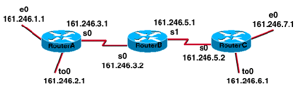
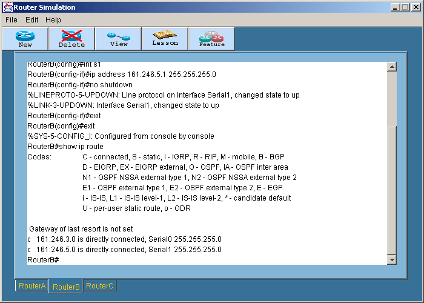
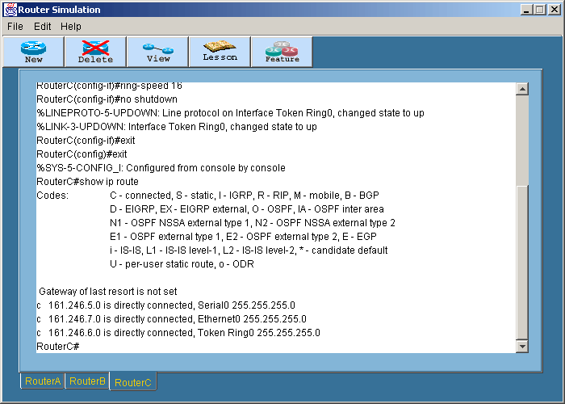
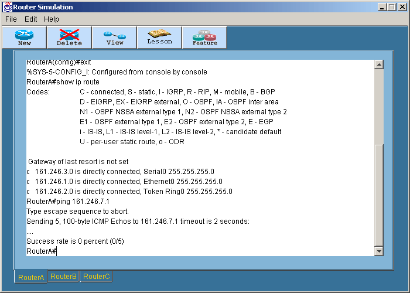
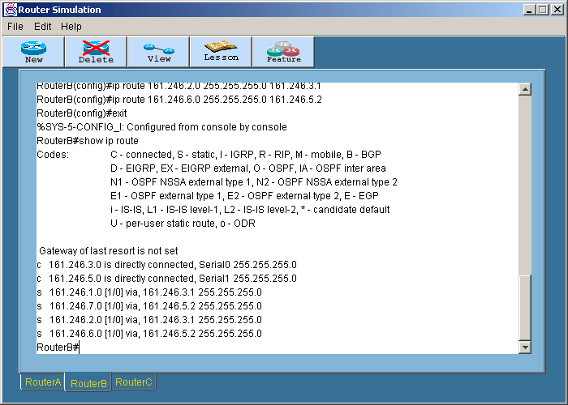
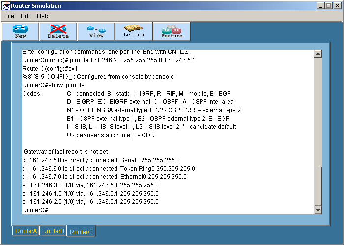
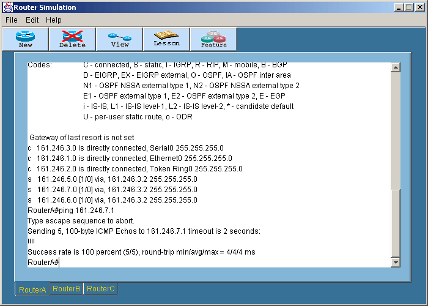
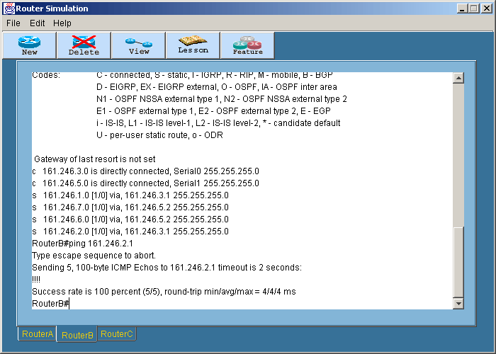

Static Routes
Lab นี้จะให้ลองติดตั้งเราเตอร์ทั้งหมด
3 ตัว โดย click ที่ปุ่ม new ให้มีเราเตอร์ทั้งหมดสามตัวคือ Router1,Router2
และ Router3 ตามลำดับ โดยจะทำการเชื่อมต่อให้เป็นดังรูป

- เริ่มตั้งชื่อโฮสต์ และกำหนด ip address ให้กับเราเตอร์โดยพิมพ์ตามนี้
สำหรับ RouterA :
Router1#config t
Router1(config)#hostname RouterA
RouterA(config)#int e0
RouterA(config-if)#ip address 161.246.1.1
255.255.255.0
RouterA(config-if)#no shut
RouterA(config-if)#int s0
RouterA(config-if)#ip address 161.246.3.1
255.255.255.0
RouterA(config-if)#no shut
RouterA(config-if)#int to0
RouterA(config-if)#ip address 161.246.2.1
255.255.255.0
RouterA(config-if)#ring-speed 16
RouterA(config-if)#no shut
สำหรับ RouterB :
Router2#config t
Router2(config)#hostname RouterB
RouterB(config)#int s0
RouterB(config-if)#ip address 161.246.3.2
255.255.255.0
RouterB(config-if)#no shut
RouterB(config-if)#int s1
RouterB(config-if)#ip address 161.246.5.1
255.255.255.0
RouterB(config-if)#no shut
สำหรับ RouterC:
Router3#config t
Router3(config)#hostname RouterC
RouterC(config)#int e0
RouterC(config-if)#ip address 161.246.7.1
255.255.255.0
RouterC(config-if)#no shut
RouterC(config-if)#int s0
RouterC(config-if)#ip address 161.246.5.2
255.255.255.0
RouterC(config-if)#no shut
RouterC(config-if)#int to0
RouterC(config-if)#ip address 161.246.6.1
255.255.255.0
RouterC(config-if)#ring-speed 16
RouterC(config-if)#no shut
- พิมพ์ show ip route ในแต่ละเราเตอร์ จะได้ผลดังนี้
RouterA
Router B

Router C

- ขณะที่ยังไม่มีการเชื่อมต่อกับเราเตอร์ภายนอกเลยให้ทดสอบโดยใช้คำสั่ง
ping เช่น
RouterA#ping 161.246.7.1

- สร้าง static route โดยดูที่วง network 161.246.3.0,161.246.5.0
RouterA#config t
RouterA(config)#ip route 161.246.5.0 255.255.255.0
161.246.3.2
RouterA(config)#ip route 161.246.6.0 255.255.255.0
161.246.3.2
RouterA(config)#ip route 161.246.7.0 255.255.255.0
161.246.3.2
ทำการ save configure โดยการพิมพ์ copy run start แล้วกด Enter
RouterB#config t
RouterB(config)#ip route 161.246.1.0 255.255.255.0
161.246.3.1
RouterB(config)#ip route 161.246.2.0 255.255.255.0
161.246.3.1
RouterB(config)#ip route 161.246.7.0 255.255.255.0
161.246.5.2
RouterB(config)#ip route 161.246.6.0 255.255.255.0
161.246.5.2
ทำการ save configure โดยการพิมพ์ copy run start แล้วกด Enter
RouterC#config t
RouterC(config)#ip route 161.246.1.0 255.255.255.0
161.246.5.1
RouterC(config)#ip route 161.246.2.0 255.255.255.0
161.246.5.1
RouterC(config)#ip route 161.246.3.0 255.255.255.0
161.246.5.1
ทำการ save configure โดยการพิมพ์ copy run start แล้วกด Enter
- ลองพิมพ์ show ip route ที่เราเตอร์ทั้งสามจะได้ผลดังนี้
RouterA#show ip route
RouterB#show ip route

RouterC#show ip route

- ลองใช้คำสั่ง ping
RouterA#ping 161.246.7.1

RouterB#ping 161.246.2.1

RouterC#ping 161.246.1.1
สำหรับโหมดการทำงานทั้งหมดของเราเตอร์สามารถดูได้ในสรุปคำสั่งทั้งหมด
|